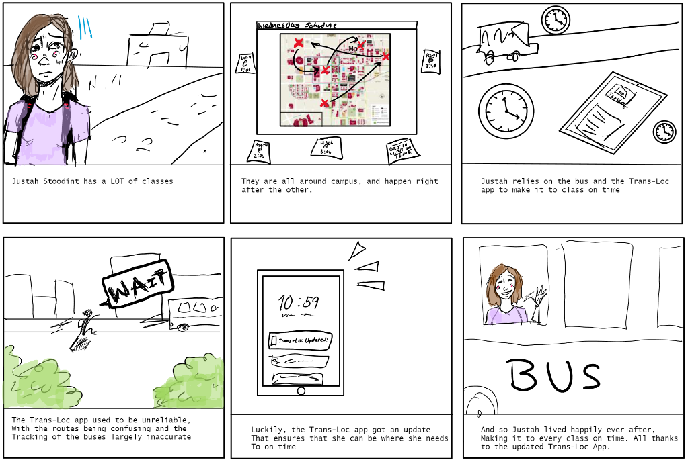

Problem Statement:

The bus system on USC's campus is difficult for students to navigate (especially for new students), and the Transloc app is often unhelpful in tracking buses.
Affinity Diagram: Bus-tling around Campus

There are many issues to consider when inspecting the TransLoc app. The majority of these can be split into different categories: Functionality (how the app should work), Interface (how to make the app more appealing / usable), Integration (how the app should integrate with USofC specifically), Routes (how to improve the route system), and General Issues that cannot be categorized.
Team Personas: Bus-ted Personas
My persona was Justah Stoodint. Her main concern is getting to class on time, which is tricky due to the unreliability of the Trans-Loc app.
"I have classes all around campus and not enough time to get there! I wish the Trans-Loc app was more reliable." ~ Justah, 18
Team Storyboards: [Bus-ted Storyboard]
Justah's storyboard shows the before and after the Trans-Loc app recieves a much needed update.


Team Sketches:
The overarching aspect of these sketches is to show potential updates that can be taken to improve the Trans-Loc app. My sketches show an updates UofSC Integrated Logo, a route screen, and an updated version of the On-Demand function.

Team Paper Prototype: Cocky-Loc Paper Prototype
This prototype goes through the various updates that could be implemented such as updates to the On Demand tab, the potential of UofSC schedule integrations, and an updated settings tab